Questions
Q1: Engineering Technical Leads
34
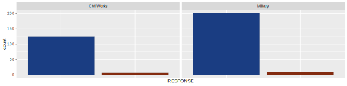

by District
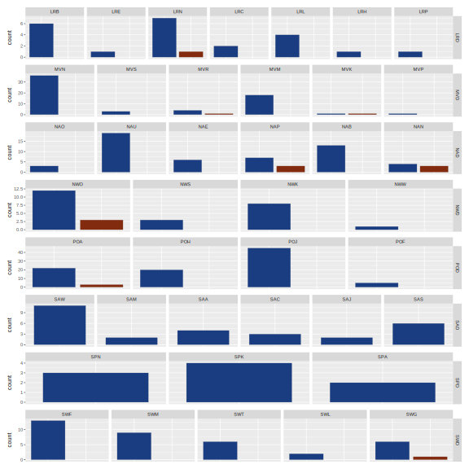
Q2: Design Team Members
12
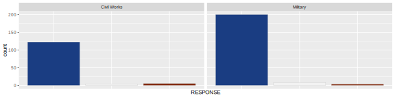
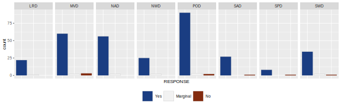
by District
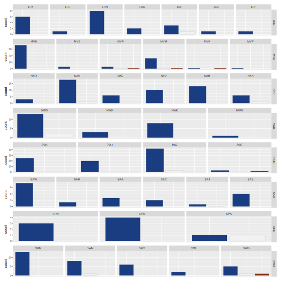
Q3: Review Team Members
10
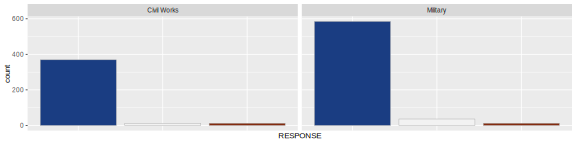
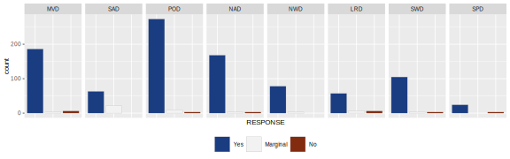
by District
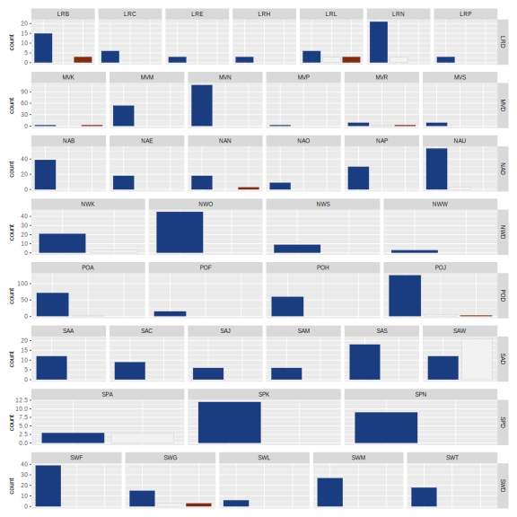
Q4: Relevant Design Experience
13
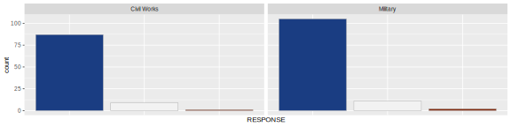
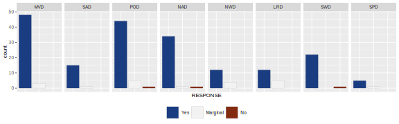
by District

Q5: Senior Staff Mentors
1

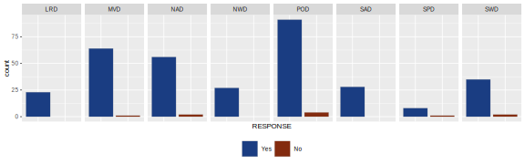
by District
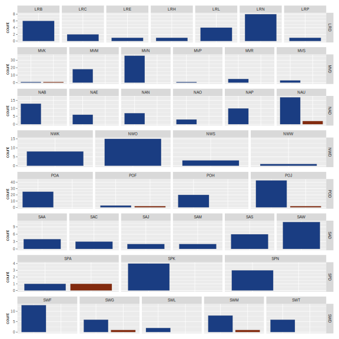
Q6: Government Capacity
9
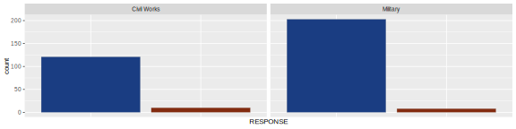
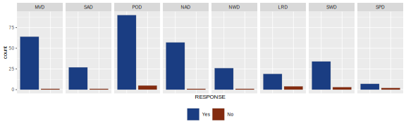
by District
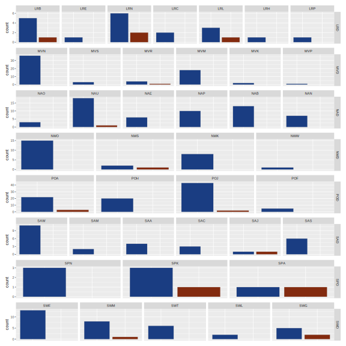
Q7: Centers Of Expertise And Standardization
30


by District
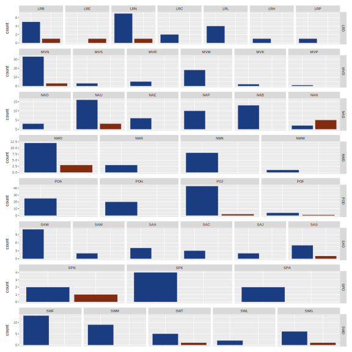
Q8: Permitting Authorities
31

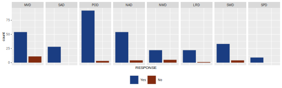
by District
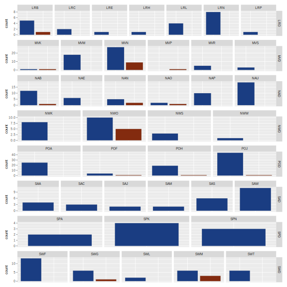
Q9: Planning/Programming Assumptions
2
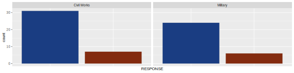
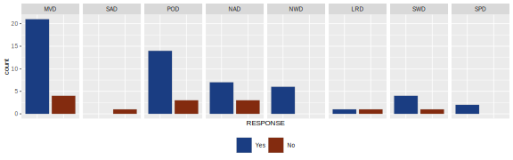
by District
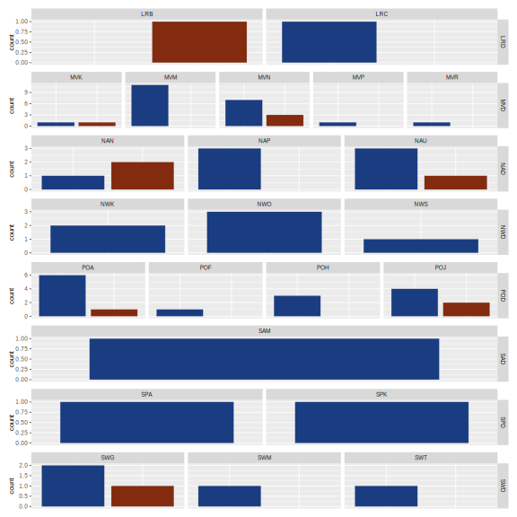
Q10: Planning Scope Definition
4

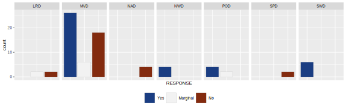
by District
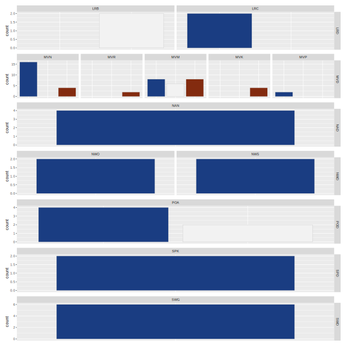
Q11: Total Project Cost Summary
37

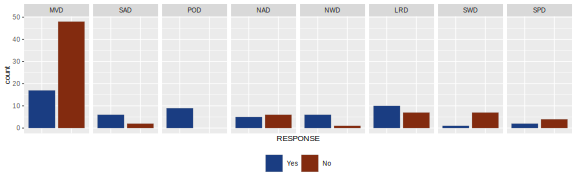
by District
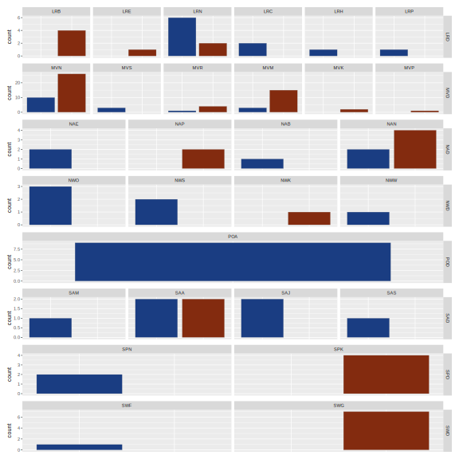
Q12: Design Deviations
3
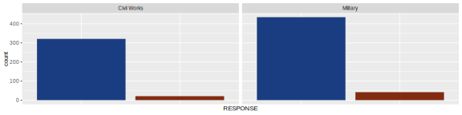
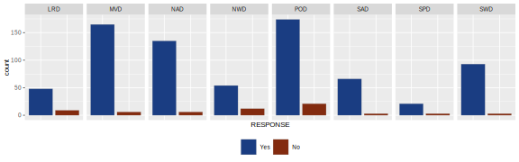
by District
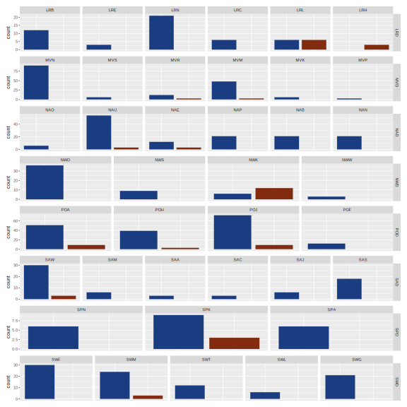
Q13: Lessons Learned
29
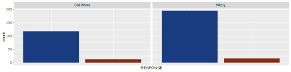
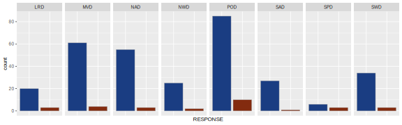
by District
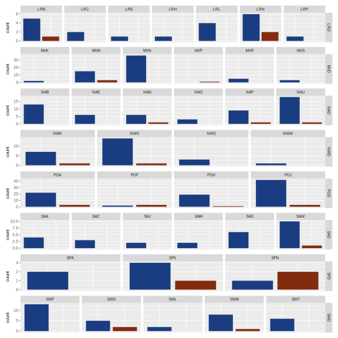
Q14: Milestone Expectations
8
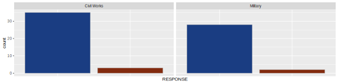
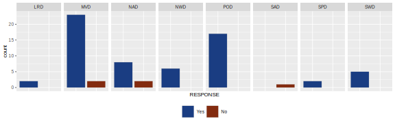
by District
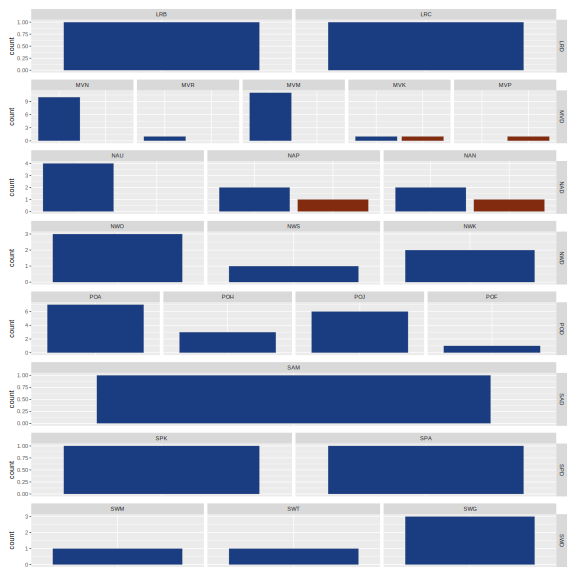
Q15: Scheduled Design Milestones
16

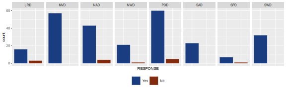
by District
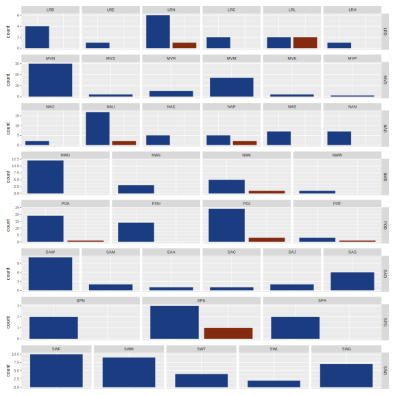
Q16: Sufficient Milestone Time
17
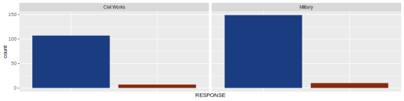
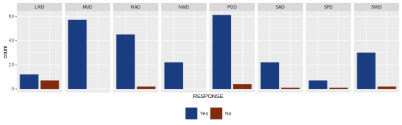
by District
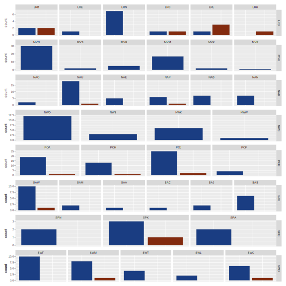
Q17: Qc/Qa
18
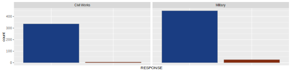
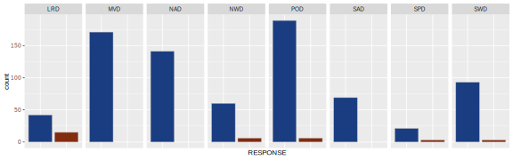
by District
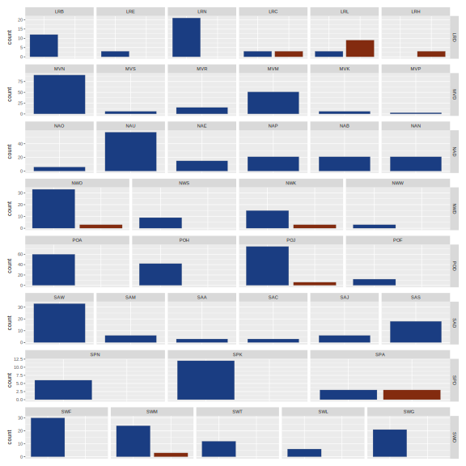
Q18: Engineering Investigations
19
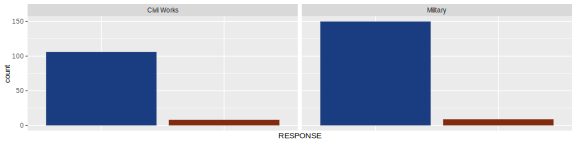
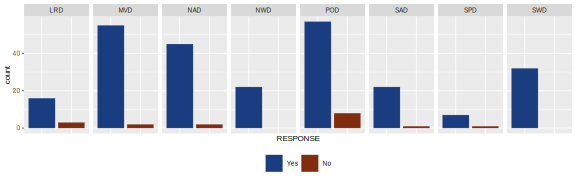
by District

Q19: Permitting
20

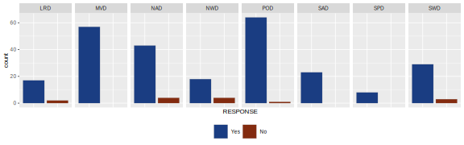
by District
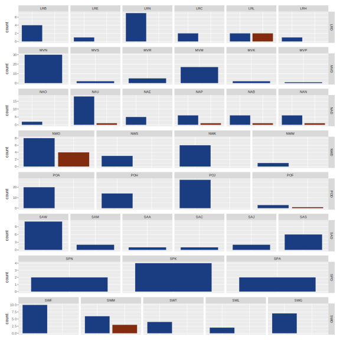
Q20: Project Schedule
32
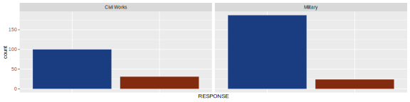
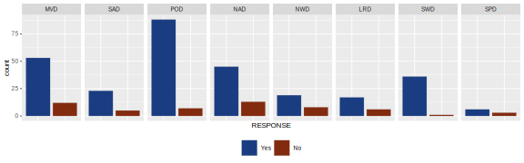
by District
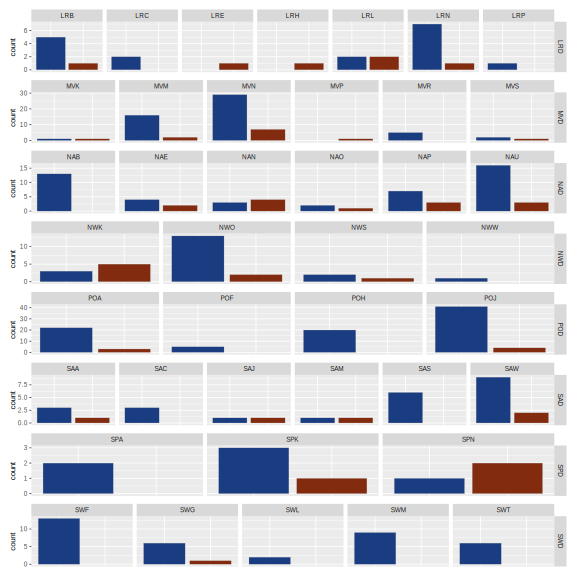
Q21: Approved Qmp/Rp
15

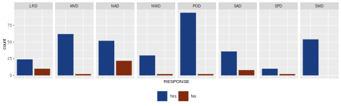
by District

Q22: Quality Review Sequencing
5
by District
Q23: Qmp/Rp Implementation
36
by District
Q24: Rigorous Computation Review
24

by District
Q25: Rigorous Plan Review
25


by District
Q26: Rigorous Specifications Review
27
by District
Q27: Rigorous Model Review
26
by District
Q28: Bcoes
21

by District
Q29: Review Certifications
28


by District
Q30: Qmp/Rp Update
22

by District

Q31: Project Scope Accomplished
11
by District

Q32: Design Milestone Expectations
6
by District
Q33: Class Of Estimate
33

by District
Q34: Risk Register
14
by District
Q35: Dod Construction Agent
35
by District
Q36: Suported Program Amount
7

by District
Q37: Turnover
23

by District

Q38: Overall Confidence
38

by District